SAFARI
Users
Abiu
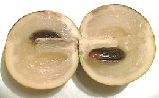 [Abio; Abieiro (Portugal), Yellow Star Apple (Trinidad); Camio, Caimito amarillo (Colombia); Luma, Cauje (Ecuador); Temare (Venezuela); Pouteria caimito]
This yellow - green fruit is native to the headwaters of the Amazon (Eastern
Peru, western Brazil, southern Venezuela). They are now grown to some extent
in southern Florida and northeastern Queensland, Australia. The fruit tastes
much like Sapodilla but has a smoother texture. It is mostly eaten fresh but
is also used to flavor ice cream and yogurt and other light flavored dishes.
Photo by Pouletic distributed under license Creative Commons
Attribution-Share Alike 3.0 Unported.
Argan
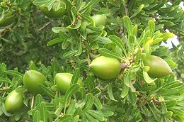 [Argania spinosa]
This tree, native to semi-desert regions of Morocco and Algeria,
bears pointed oval fruits up to 1-1/2 inches long. The peel is bitter. The
thin flesh has an attractive sweet aroma but unpleasant taste. Of interest
is the large hard seed, source for Argan Oil. Until recently, this oil was
almost unknown outside Morocco where it is used as a dipping oil and as a
cooking oil substituted for olive oil, It is also important in cosmetics,
having a very high vitamin E and phenol content. This oil is now much more
widely known due to conservation efforts, and is now exported as a high
value product, making properly managing the trees economical.
Details and Cooking.
Photo distributed under license Creative Commons
Attribution-ShareAlike 3.0 Unported.
Black Sapote
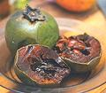 [Zapote Negro, Chocolate pudding fruit]
It looks like a sapote, it's soft and sweet like a sapote, but it's
actually a Persimmon,
fruit of an Ebony tree.
Canistel
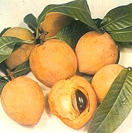 [Yellow Sapote, Eggfruit; Chesa (Philippine); Lamut Khamen (Thai); Lekima, cay trung ga (Vietnam); Pouteria campechiana]
This tree is native to southern Mexico and Central America but is now
grown in Brazil, Taiwan and Southeast Asia. The fruit grows to about 2.8
inches long with sweet flesh having a texture likened to cooked egg yolk.
Photo by Hans B. contributed to the public domain.
Chicle
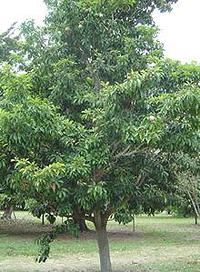 [Manilkara chicle]
This tree, native to southern Mexico and Central America. It is famous as
the original source of chewing gum. Today few gum makers still use natural
chicle, most now use butadiene-based synthetic rubber. The gum is
harvested by tapping the trees the same as rubber trees. Because they
have been over harvested, a lot of the natural gum now comes from
Manilkara zapota (Sapodilla) or M. bidentata (Balata,
once famous for golf ball coverings).
Photo by United States Federal Government = public domain.
Gutta-percha
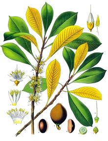 [Genus Palaquium species]
This tree is native to Southeast Asia and northern Australia. The sap,
also called Gutta-percha, was a very important electrical insulator,
particularly for telegraph cables from about 1845 until the invention of
modern plastics. In more recent times it has had important surgical and
dental uses as it is biologically inert and has a convenient melting
point. Its use as the core of golf balls revolutionized the sport. Today
it is less used, and sometimes replaced by a similar but less expensive
sap called balata from a similar and related tree (Manilkara
bidentata) that grows in the Caribbean region. The fruits of a
number of Palaquium species are edible and may be up to 2-3/4
inches long but are not of commercial importance.
Drawing by Franz Eugen Köhler, copyright expired..
Lucuma
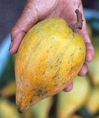 [Pouteria lucuma]
Native to the Andean region of Peru, this large, very nutritious fruit has
rather dry bright yellow, sometimes fibrous, flesh with the texture of
cooked egg yolks and a flavor similar to maple and sweet potato. It has
been grown successfully in Southern California but is not yet a
significant crop here, though it is now a significant crop in Laos and
Vietnam. It has recently found a market as a dried flavoring ingredient.
Photo by David Hagerman distributed under license
Attribution 2.0
Generic.
Mamey Sapote
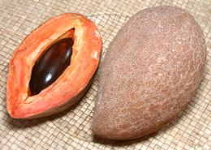 [PLU 4310; Pouteria sapota]
This tropical tree is native to southern Mexico but is now grown in Central and parts of South America, Southeast Asia and southern Florida. The fruit is ripe when the flesh yields to the press of a thumb, a bit softer than for a ripe avocado - you really don't want to even try eating one that isn't fully ripe.
Ripe ones are eaten raw and also used
to flavor milkshakes, smoothies, ice cream and fruit bars. The texture
is soft and slightly fibrous. The fruit is aromatic, almost like a
cherry filled chocolate. The larger of the photo specimens, grown in
USA, was 7-3/4 inches long, 4-1/8 inches diameter and weighed 2 pounds.
The price has been coming down, and I've recently seen it for 2019
US $2.29 / pound in a large multi-ethnic market in Los Angeles
(Altadena).
Miracle Fruit
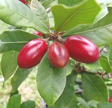 [Sweet berry; Agbayun,Taami, Asaa, Ledidi (West Africa); Synsepalum dulcificum]
Native to West Africa, this fruit, when consumed, causes substances as
sour as lemon or lime juice to taste sweet. The fruit itself is just
mildly sweet. The effect is from a protein called miraculin which
apparently binds to the sweetness receptors of the tongue causing them
to sense sour rather than sweet and report sweet to the brain. The effect
can last up to 60 minutes. Commercial exploitation has seen minor success,
and the fruit is now grown in Ghana, Puerto Rico, Taiwan, and South
Florida, but miraculin is now being produced commercially using
genetically altered tomato plants. The fruit is highly perishable,
lasting only 2 to 3 days, and miraculin is destroyed by even
moderate heating, so the flesh is usually distributed in freeze dried
form, which lasts 10 to 18 months depending on storage conditions.
Photo by Hamale Lyman contributed to the public domain.
Sapodilla
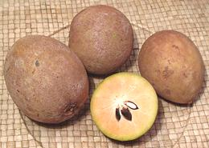 [Zapote, Sapote, Nispero, Dilly, Naseberry (Caribbean, South and Central America): Chico, Tsico (Philippines): Chicozapote (Mexico, California, Florida); Chicoo, Sapote (India, Pakistan); Hong xiem, Lang mirt, Xa po che (Vietnam); Lamoot (Thai, Laos, Cambodia); Manilkara zapota]
Native to Mexico, Central America and the Caribbean, this popular
fruit is now grown in the Philippines, India and Pakistan. The flesh is
soft, moderately sweet and almost gritty in texture and has been compared
to a candied pear in flavor. The cut photo specimen is nowhere near ripe
enough to eat and will be very astringent due to the saponin content.
The flesh, when fully ripe is a darker brownish orange. They do not
ripen on the tree, only after being picked. The photo specimens,
purchased from an Asian market in Los Angeles were typically 3.6 inches
long, 2.75 inches diameter and weighed 8-1/2 ounces
Shea Nut
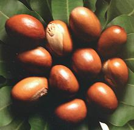 [Shi Tree; Gonja (Niger-Congo); Vitellaria paradoxa obs. Butyrospermum parkii]
This fruit tree is native across equatorial Africa (not quite touching the coast on either east or west), but Turkey is now also a major grower. The flesh of the fruit (about 2-1/4 inches long) is tart, edible, and nutritious, but rather thin, surrounding a large seed. The seed is the primary interest, as it yields a large amount of oil. This oil, very high in saturated and monosaturated fats, is called shea butter. It is solid at a cool room temperature, but this solidity is quite variable depending on the saturated / monunsaturated ratio provided by individual trees. Some separates, so liquid oil (mostly monounsaturated oleic acid) can be siphoned off.
Unrefined Shea Butter has an antioxident content similar to olives,
with a profile similar to green tea. In the West, shea butter is used
mainly for cosmetics, but in equatorial Africa it is a major cooking
oil, and is also used to make soap. IUCN Red List VU (Vulnerable).
Photo by LC-Seminar Uni Hohenheim contributed to the
Public Domain.
Details and Cooking.
Star Apple
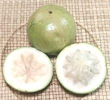 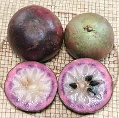 [Vu sua (Vietnam); Cainito, Caimito, Abiaba, Pomme du Lait, Estrella, Milk Fruit, Aguay. Golden Leaf Tree; Chrysophyllum cainito]
Native to lowland Central America and the Caribbean, this fruit is now
popular in Vietnam as well. The fruit comes in three colors: purple
(right photo), brownish green (left photo), which has a thinner skin and
juicier flesh, and a rare yellow version. The flesh of both is soft,
sweet and interestingly aromatic, but there's not a lot of it due to the
1/4 inch thick rind. The photo specimens were from Vietnam, purchased
from a large Asian market in Los Angeles (San Gabriel). The
largest green one was 3.33 inches diameter and weighed 11.2 ounces,
67% edible. Cost was 2020 US $5.98 / pound. The largest purple one was
3.06 inch diameter and weighed 8.5 ounces, 68% edible. Cost was
2020 US $2.99 / pound.
White Sapote
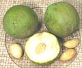 [Zapote Blanco, Sleep Sapote]
It looks like a sapote, it's soft and sweet like a sapote, but it's
actually a Citrus.
Wongi
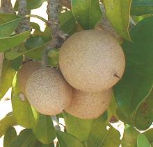 [Caqui (Worldwide); Wongi (Australia); Manilkara kauki]
This tree is native to Southeast Asia from Thailand to Papua New
Guinea and northern Queensland, Australia. The fruits are a traditional
food of the Torres Strait Islanders (between the tip of Queensland and
Papua New Guinea). Note: the photo is actually of M. zapote
because no usable M. kauki photo was found. In Australia
M. kauki is often used as a grafting root stock for
M. zapote so you can imagine the photo specimens have
M. kauki roots.
Photo by Docku distributed under license Creative Commons
Attribution-Share Alike 3.0 Unported.